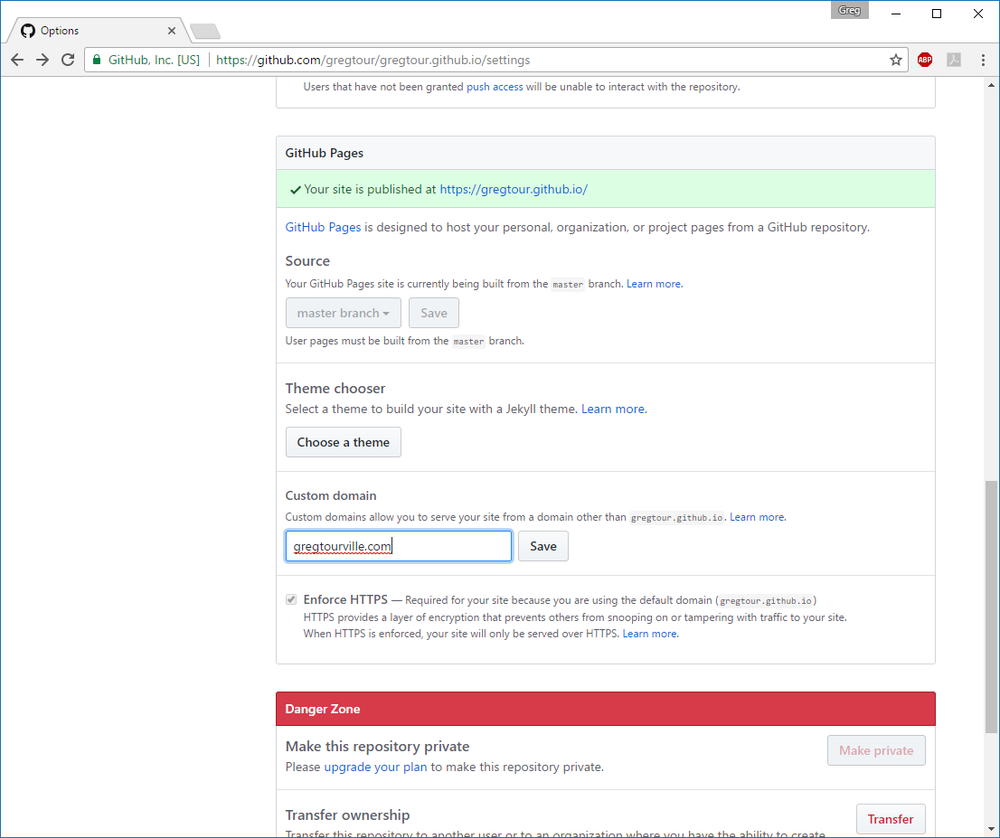

Guide to joining GitHub
First, create a GitHub account at
github.com.
Choose a user name and register for a free account.
Now open GitHub Desktop and sign in with your Git Hub account. You should see a screen that looks like this:
Guide to using GitHub Pages
Click "Create new Repository."
Usually, you can name your repository for a code project anything you want. Since this will be my personal GitHub pages repository, it needs to have a specific name.
It follows the pattern username.github.io. Since my username is "gregtour," my repository name is "gregtour.github.io."
After clicking "Create repository," GitHub makes a folder and repo for me.
By going to the menu Repository >> Open in Explorer, I can open this folder on my computer.
The repository is located in the folder Documents\GitHub\gregtour.github.io.
The only file here is the README or it might be empty. This is where my webpage will load so I need a file called "index.html".
Since I don't have a website already made, I make a new file called "index.html".
Using a text editor, I add some basic HTML and save my file.
Now, going back to GitHub Desktop it shows me what files have changed since the last commit.
I want to commit my files so I have to add text to the "Summary" and then press "Commit to master".
This doesn't change the repository on github.com yet. To do that the first time, I need to click "Publish repository".
If I make changes, then I will add another summary and make a commit. To make my changes show up on github.com, I need to use the "Push origin" button, where Publish Repository appeared.
Then GitHub sends my files over the Internet to my github.com repository. I can access them online or download them on another computer, and it will also update my GitHub Pages website.
It includes a list of files that are hosted on my GitHub Pages website. If I want to see my website, then I go to
gregtour.github.io
Looks good!
I can change the settings for my repository with the settings button on the repo page which showed my files.
Scrolling down to the "GitHub Pages" section, there is a form for a Custom domain.
I will want to enter my personal domain name, say gregtourville.com, here and then click save.

I then have to update this information with my domain name registrar for this to work.
I made this guide in HTML. I can upload it to my GitHub Pages website by checking it in with a "Commit to master" and then doing a "Push".
Now my website is available online for free.